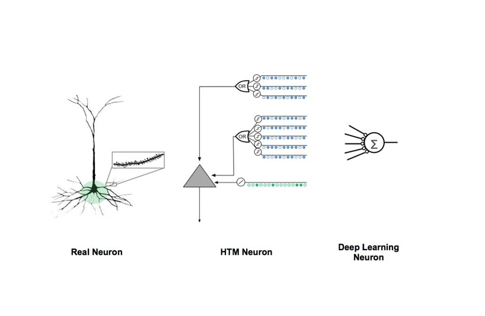

Numenta Researchers Discover How The Brain Learns Sequences, A Key to Intelligent Systems
 Numenta•Press Release
Numenta•Press ReleaseREDWOOD CITY, CA –April 12, 2016— How do our brains learn and understand the world? That question is of paramount importance to both neuroscientists and technologists who want to build intelligent machines.
It has been understood for over a hundred years that the inputs and outputs of the brain are constantly changing sequences of patterns and therefore learning and recalling sequences must be a fundamental operation of neurons. Numerous proposals have been made for how neural networks might learn sequences. However, these proposals did not match the anatomy and function observed in the brain.
Numenta’s theory of how the brain learns and understands sequences of patterns may be an essential component for creating intelligent machines
Now, researchers at Numenta Inc. have published a new theory that represents a breakthrough in understanding how networks of neurons in the neocortex learn sequences. A paper, authored by Numenta co-founder Jeff Hawkins and VP of Research Subutai Ahmad, “Why Neurons Have Thousands of Synapses, A Theory of Sequence Memory in Neocortex,”* has been published in the Frontiers in Neural Circuits Journal, a publication devoted to research in neural circuits, serving the worldwide neuroscience community.
“This study is a key milestone on the path to achieving that long-sought goal of creating truly intelligent machines that simulate human cerebral cortex and forebrain system operations,” commented Michael Merzenich, PhD, Professor Emeritus UCSF, Chief Scientific Officer for Posit Science.
The Numenta paper introduces two advances. First, it provides an explanation of why neurons in the neocortex have thousands of synapses, and why the synapses are segregated onto different parts of the cell, called dendrites. The authors propose that the majority of these synapses are used to learn transitions of patterns, a feature missing from most artificial neural networks. Second, the authors show that neurons with these properties, arranged in layers and columns - a structure observed throughout the neocortex - form a powerful sequence memory. This suggests the new sequence memory algorithm could be a unifying principle for understanding how the neocortex works. Through simulations, the authors show the new sequence memory exhibits a number of important properties such as the ability to learn complex sequences, continuous unsupervised learning, and extremely high fault tolerance.

Comparison of Biological and Artificial Neuron Models
The Hawkins-Ahmad paper on the theory of sequence memory in the neocortex proposes a model of cortical neurons that explains why they have thousands of synapses, why the synapses are segregated onto different parts of the dendrites, and how neurons integrate this input in a functionally meaningful way. This diagram draws a comparison between the human neocortical pyramidal neuron, the HTM biologically-inspired neuron model, and the model used in most mathematically-inspired artificial neural networks and Deep Learning models today.
“Our paper makes contributions in both neuroscience and machine learning,” Hawkins noted. “From a neuroscience perspective, it offers a computational model of pyramidal neurons, explaining how a neuron can effectively use thousands of synapses and computationally active dendrites to learn sequences. From a machine learning and computer science perspective, it introduces a new sequence memory algorithm that we believe will be important in building intelligent machines.”
“This research extends the work Jeff first outlined in his 2004 book On Intelligence and encompasses many years of research we have undertaken here at Numenta,” said Ahmad, “It explains the neuroscience behind our HTM (Hierarchical Temporal Memory) technology and makes several detailed predictions that can be experimentally verified. The software we have created proves that the theory actually works in real world applications.”
Numenta’s primary goal is to reverse engineer the neocortex, to understand the detailed biology underlying intelligence. The Numenta team also believes this is the quickest route to creating machine intelligence. As a result of this approach, the neuron and network models described in the new paper are strikingly different than the neuron and network models being used in today’s deep learning and other artificial neural networks. Functionally, the new theory addresses several of the biggest challenges confronting deep learning today, such as the lack of continuous and unsupervised learning.
*Hawkins, J., and Ahmad, S. (2016). Why Neurons Have Thousands of Synapses, A Theory of Sequence Memory in Neocortex. Front. Neural Circuits 10. doi:10.3389/fncir.2016.00023
About Frontiers in Neural Circuits
Frontiers is a leading open-access publisher. Established in 2007, Frontiers drives innovations in peer review, post-publication review, impact metrics, and an ecosystem of open-science tools. Frontiers has published over 43,000 articles across 55 journals and over 400 disciplines, which receive 4 million monthly views, and are supported by over 210,000 researchers.
About Numenta
Founded in 2005, Numenta develops theory, software technology, and applications all based on reverse engineering the neocortex. Laying the groundwork for the new era of machine intelligence, this technology is ideal for analysis of continuously streaming data sets and excels at modeling and predicting patterns in data. Numenta has also developed a suite of products and demonstration applications that utilize its flexible and generalizable Hierarchical Temporal Memory (HTM) learning algorithms to provide solutions that encompass the fields of machine generated data, human behavioral modeling, geo-location processing, semantic understanding and sensory-motor control.
In addition, Numenta has created NuPIC (Numenta Platform for Intelligent Computing) as an open source project. Numenta is based in Redwood City, California.
Numenta Media Contact:
Krause Taylor Associates,
Betty Taylor:
bettyt@krause-taylor.com
408-981-7551
Connect with Numenta:
Twitter,
Facebook,
YouTube and
LinkedIn
Numenta•Press Release